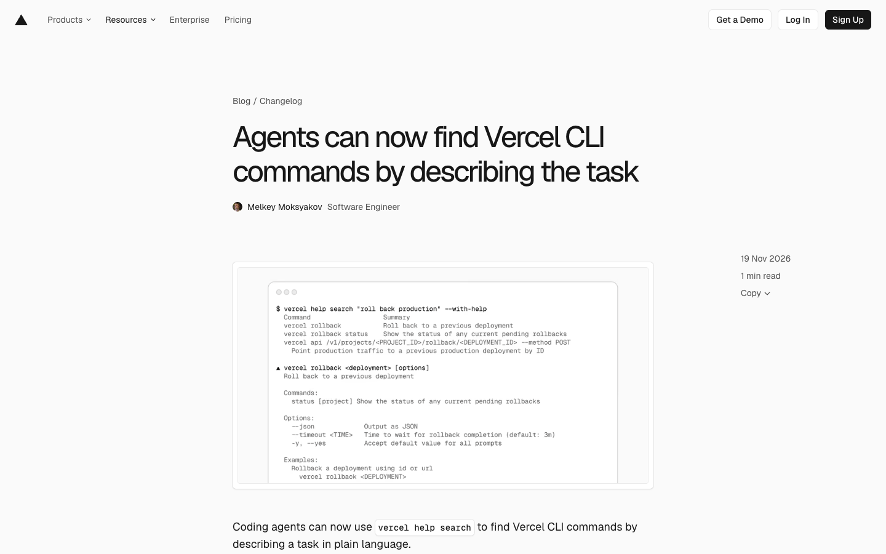
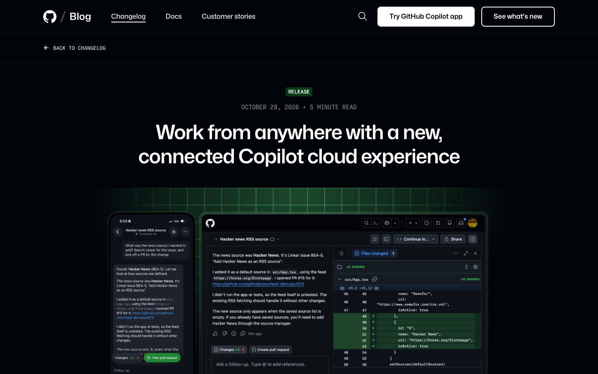
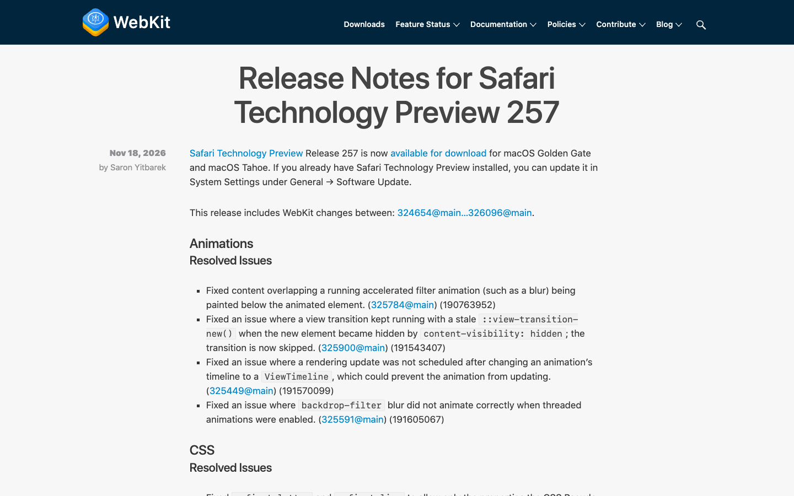
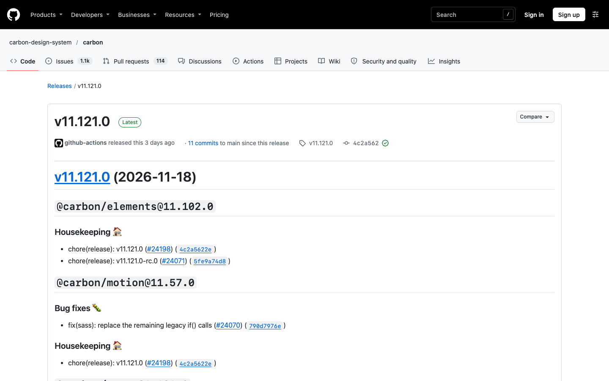
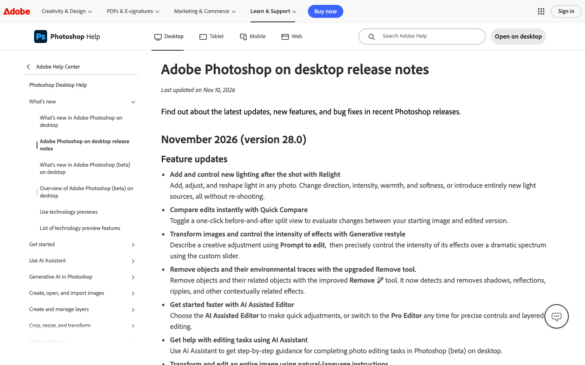
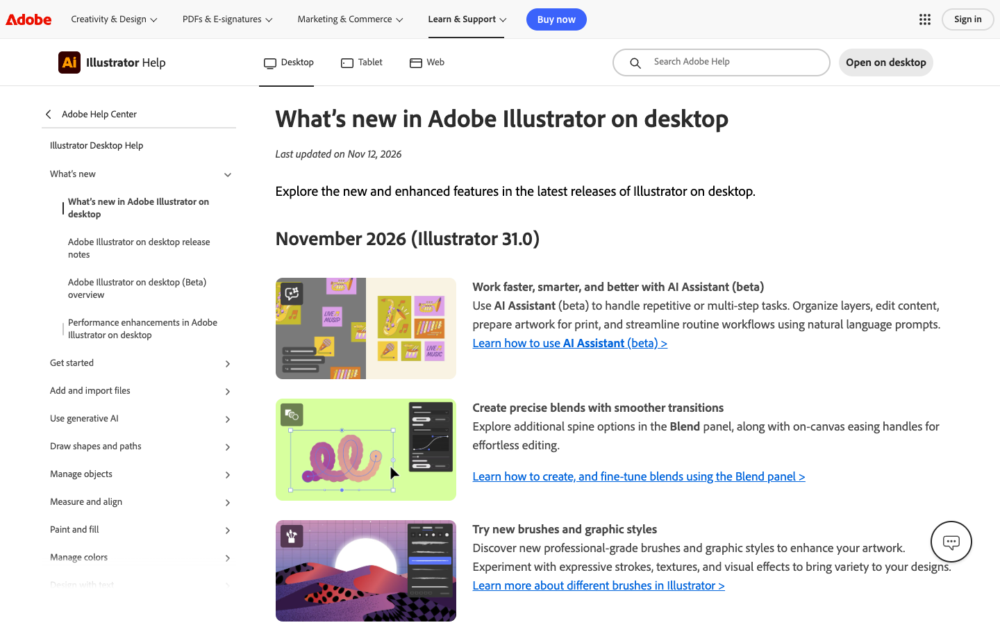
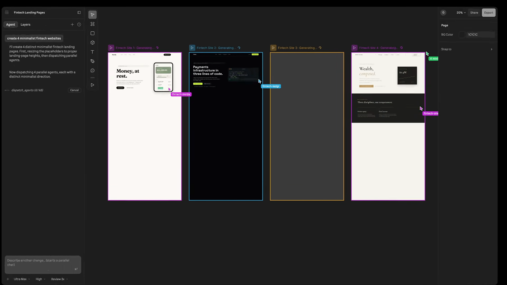

今天几条信号看起来分散：Hana 把 3D、CSS Grid 和 MCP 放进同一张设计画布，Vercel 给 CLI 加语义检索，GitHub 开始把云端 Copilot 的计费与权限边界说得更明白，Safari 和 Carbon 则继续修那些“不出效果图、但会直接影响交付”的行为细节。
它们实际指向同一件事：设计工具正在靠近实现语义，实现工具也开始补上可发现性、权限和可回读的状态。画布里能不能保留结构、命令能不能被代理准确找到、组件有没有正确的焦点与 aria，已经是一条链上的问题。
这周先少追“又多了一个 AI 按钮”。更该看的是，工具有没有把设计意图变成可检查、可撤回、可交接的对象；做不到这一点，生成速度越快，后面的清理账越大。

Vercel CLI 新增 vercel help search：不记得命令名时，可以直接描述“列出部署”“添加环境变量”这类任务，再用 --with-help 带回完整帮助；也提供 API 与 JSON 输出。官方称检索文本不会被记录，常见措辞和拼写错误也能容忍，需要更新到最新版 CLI。
这不是一个花哨的聊天入口，而是在补代理工具最常见的断点——命令存在，但模型不知道该叫它什么。真正好用的 agent interface，第一步往往不是再包一层自然语言，而是让能力目录可检索、参数可展开、输出可解析。

GitHub 的 connected Copilot cloud experience 将在 2026-11-23 开始计费，消耗 Copilot 付费方案所含的 GitHub Actions 额度。云端代理在需要额外权限的工具调用前仍要审批；仓库没有写权限时只能只读，企业侧的 agent 权限和 MCP allowlist 也继续生效，默认会话范围被限制在一个组织或个人仓库集合。
这条的重点不是“随处继续写代码”，而是明天起成本、授权和仓库边界都会进入真实使用账单。设计工程团队要把它当远程执行环境来评估：谁能写、能连哪些 MCP、一次会话碰到多少仓库，比演示里的生成速度更关键。

这一版修了几组很贴近产品动效的坑：blur() / filter stacking、隐藏新元素参与 View Transition、ViewTimeline 更新调度、backdrop-filter 模糊动画；还处理了滚动卡顿、渐变在 Adaptive Dark Mode 下的性能、will-change 生成超大合成层的内存占用，以及 sticky 抖动、缩放时 vw/vh 压扁等问题。
如果动效稿依赖模糊、滚动时间线和跨状态转场，Safari 上的“偶发抖一下”不能继续归类为视觉误差。257 这份清单可以直接变成回归测试目录，尤其要盯 will-change：为了流畅常驻合成层，最后可能先把内存打穿。

Carbon 把 Tearsheet、PageHeader、Coachmark 正式带进 v11，同时给 File Uploader 增加 xs 尺寸和 contextual layout token。更有分量的是一串行为修复：进度错误能被读屏宣布，侧栏当前项有 aria-current="page"，清除输入后焦点状态正确，MultiSelect 不再让选项 checkbox 进入额外 tab stop，菜单关闭后能把焦点还回去，RTL 子菜单和标签页也补齐了。
组件库升级最容易只截图看三个新组件，这版真正该抄的是“行为合同”清单。焦点去哪、状态怎么读、RTL 怎么走，才决定组件能不能被团队放心复用。

Photoshop 28.0 加入 Relight、可拖拽分屏的 Quick Compare、带强度滑杆的 Generative restyle，以及会联动识别阴影、反射和水波的 Remove；AI Assisted Editor 可切到 Pro，另外还有 Generative Recompose、Quiet Mode 与性能、无障碍更新。
Quick Compare 和关联瑕疵清理比“又一个生成入口”更像生产工具，因为它们直接减少来回开关图层、漏删倒影的时间。还没实测，先不下质量结论；官方页面也没有把各项生成动作的 credits 成本讲清，进团队流程前得先做一轮失败是否扣费和高分辨率交付测试。

Illustrator 31.0 的 AI Assistant 会抢到大标题，但更实用的更新是 blend：新增 spine 选项与画布内 easing 手柄；链接图可以一次 relink 全部实例，排列间距也补了快捷键、Action 和预览。应用栏开始显示 credit 使用量，生成成本终于不必藏在二级页面。
这几个改动连起来看，是在修“做得出来但难维护”的老问题。包装和品牌延展里，blend 曲线可视化、资产一键换源、额度常驻可见，都比一次性生成更接近可交付流程。还没实测，伙伴模型又有地区可用性限制，先别把它写进跨地区团队的固定 SOP。

这是 Spline 发布的 38 秒 Hana V2 短片。官方原片已下载核验，文件为 1920×1080、60fps、38.414 秒；片子从 agent prompt 起手，迅速切到深色画布里的 3D 资产、海报组合和编辑状态，再用白底圆形场景做呼吸，最后收进一排功能标签。节奏快，但每一段先给结果、再露工具，不靠抽象粒子给“AI 感”凑数。
它真正值得拆的是产品叙事。3D 模型没有被拍成独立炫技镜头，而是和文字、版式、选区、测量工具待在同一张画布里；黑色工作界面负责可信度，白色转场负责层次。对 AI 产品 hero video，这比“提示词 → 魔法光效 → 成品”那套老模板更有效，因为观众能看见可编辑性。
Hana 11 月设计工具更新https://spline.design/blog/hana-design-tools-update 又把这条线补完整：画布内 3D transform、可编辑文本与布局、CSS 式 Grid tracks（px、1fr、auto、repeat()）并可导出 CSS Grid，多重 fill/stroke、Display P3、版本历史、命令面板，以及让外部 agent 调用同一套工具的 MCP。编辑者能浏览和预览历史版本；命名版本、保存与恢复属于付费能力。
下一次产品演示片可以直接借这套顺序：先用 5–8 秒证明结果与工作上下文，再挑三个“能继续编辑”的证据镜头，最后才报功能名。前端实现也别只接一张渲染图，先验证 Grid 导出、3D 变换和 MCP 修改能否在往返之后保住结构。
截至本次抓取，Stash 首页与 WordPress API 的最新文章仍是 11 月 20 日的 The Divide，今天没有新增内容。这里不把旧条目换个说法当“最新”，只保留覆盖边界和后续观察点：
will-change 内存回归；Carbon 新组件的真实键盘与读屏路径。今日已覆盖：Vercel CLI 语义帮助搜索、connected Copilot cloud experience 计费与权限、Safari Technology Preview 257、Carbon v11.121.0、Photoshop 28.0、Illustrator 31.0、Hana V2 与 11 月工具更新。
视频已覆盖：Spline / Hana V2 官方短片（YouTube NaI84QfgSuI）。Stash 已登记边界：The Divide、OFFF Montreal panel、Dancing on Osees、Raven R、Give the Gift of Closeness；除非出现新 breakdown、稳定原片、价格权限或实现细节，不在下一期重复展开。